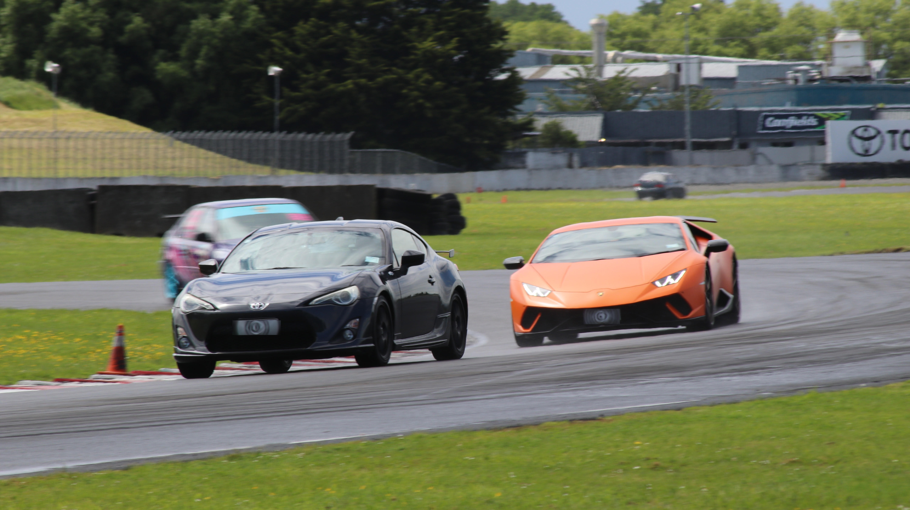

About Me – Dylan Watt
August 20, 2025
Gamer at Heart
Gaming is more than just a hobby — it’s where I live half my life. You’ll usually find me on Steam (username: RunInFrontOfTraffic — yes, really),diving deep into anything tactical, immersive, or just plain chaotic. I am a EX pro player now turned to more causal with friends
Warhammer 40K Junkie

The grimdark future is my happy place. I’ve been into Warhammer 40K for years — mostly the lore and videos. I build and paint 40K figures, but mostly what gets me hooked is the lore.
Anime Addict

Anime is a huge part of my life. My all-time favorite is Frieren (Yes its the best anime ever), but I’m also a big fan of Demon Slayer and Naruto. Honestly, I pretty much watch anything and everything anime-related. Whether it’s epic battles, deep stories, or just the cool art style, I’m here for it all. Ask me about my top 5 favorites and get ready for a long, passionate rant — plus some recommendations you didn’t even know you needed.
Airsoft Enthusiast
Outside of gaming, I’m really into airsoft. It’s a perfect mix of strategy, physical activity, and teamwork. I enjoy planning tactics with my squad, moving stealthily, and executing precise shots. It’s challenging both mentally and physically, and I like how it pushes me to stay sharp and fit (This is a lie).
Car Guy
Cars are another obsession. I love driving — not just commuting, but really driving. Manual transmissions, tight corners, open roads. Whether it's tuning up something old or just appreciating a sleek engine, I'm all about it. You’ll probably catch me talking about cars I can’t afford and mods I shouldn’t try.
If you’re still reading, congrats you now know more about me than some of my friends do.
Steam Profile: RunInFrontOfTraffic